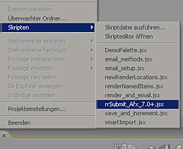
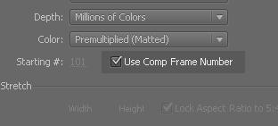

First AFX should be registered/licensed.
You have to login with the same name as the user you use for the client / client service.
Start AFX once to create the afx preferences and license afx.
Some companies have reported there have been issues fixed with this step:
Win XP:
Take ownership of the "c:\Documents and Settings\<yourLoginName>\Application Data" folder.
Win Vista / Win7:
Take ownership of the "c:\users\<yourLoginName>\Application Data" folder.
Disable windows UAC.
You have to run the rrWorkstationInstaller install the submission plugin.
In Afx, you have to run the script as shown in the screenshot.

You have to enable:

Each comp ONCE in your render queue:
You have to add each composite to your render queue to define the render and output settings for each composite.
You can only have each composite once in your render quque. It is not possible to render multiple render queue items of one composite.
It is possible to render Afx projects with skip existing frames (RR Sequence Divide disabled).
This way all clients get the full range of frames and afx distributes the frames.
The computation power of your clients is better used.
Change the line
SequenceDivide= 0~1
to
SequenceDivide= 1~0
2. In your render queue settings:
Disable "Use Storage overflow"
Enable "Skip existing files"
You have to use this in EVERY composition.
If you can not/want not enable it in your afx comp, then you HAVE TO enable Sequence Divide at the rrSubmitter for this comp file.
Afx has a bug in the EXR loader and is not able to load cropped EXR files.
You can download a new EXR loader to fix this.
See Job Option "Crop Exr".
We have several reports about AFX not wanting to render.
It printed the message "Error accesing ini file".
First definately need to follow the steps in AfterFx/Setup.
XP machines:
The solution was that the rrService user was not in the local admin group.
Windows7 machines:
UAC was enabled.
The solution so far was to disable UAC. Then AFX rendered fine.
If it still does not work, please check that the rrService user is in the local admin group (a domain admin does not seem to be enough)